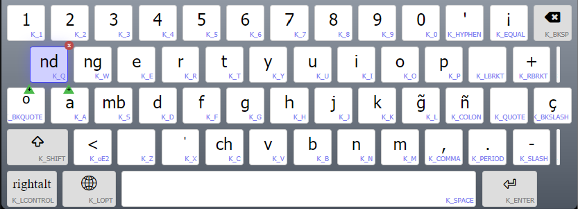
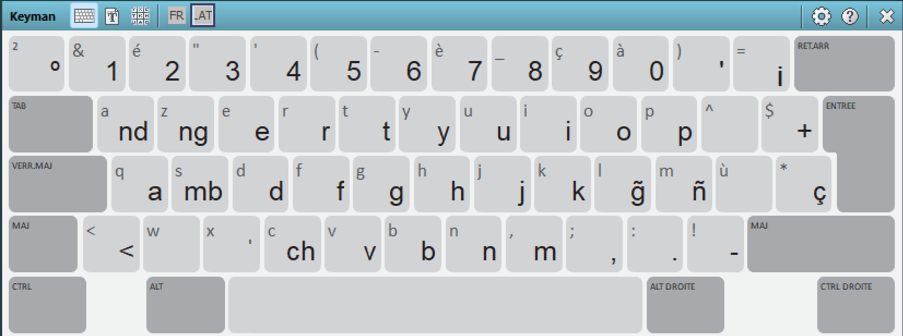
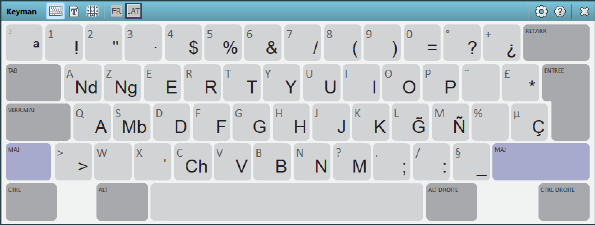

This keyboard is developed for the Guaraní language of Argentina. It is based on a QWERTY layout; however, it includes all the characters and digraphs required for Guaraní.



Developed by Manuel Locria and Facundo Jaureguibehere for Latinoamérica Habla©